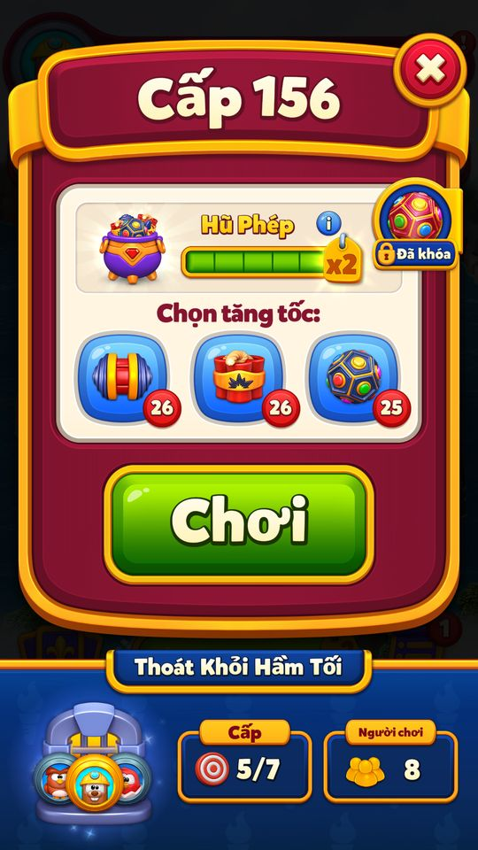

Magic Pot (bình thuốc)
Bình phép (Magic Pot) là chuỗi thắng ngay lần đầu: mỗi level thắng làm bình lên 1 bậc (tối đa 5), level sau bắt đầu với số power-up miễn phí bằng bậc bình — bậc 1…
Mô tả
- Bình phép (Magic Pot) là chuỗi thắng ngay lần đầu: mỗi level thắng làm bình lên 1 bậc (tối đa 5), level sau bắt đầu với số power-up miễn phí bằng bậc bình — bậc
 1 Dynamite, 2 thêm Rocket, 3 thêm Spinner, 4 thêm Dynamite thứ hai, 5 thêm Electro Ball.
1 Dynamite, 2 thêm Rocket, 3 thêm Spinner, 4 thêm Dynamite thứ hai, 5 thêm Electro Ball. - Bình đầy (5) từ trước còn nhân đôi điểm event và Cup Arena của level ("Reward x2"; không nhân Potion/coin).
- Thua hoặc thoát giữa chừng thì mất bình (về 0) — dialog thoát/thêm lượt cảnh báo "You will lose your Magic Pot!".
- Mở ở level 32.
- Text gợi ý: "Beat levels on your first try to start levels with power-ups!".
- Lưu ý: namespace
Home.Ui.Dialogs.PotionInfotrong inventory là dialog "How to earn potion?" của tiền tệ xây vương quốc (Potion), không phải Magic Pot — được ghi ở cuối file.
Thiết kế chi tiết
Tóm tắt thiết kế
Code Mở ở L32. Mỗi level thắng làm bình +1 bậc (tối đa 5). Level sau, bình bay lên và ném số power-up bằng bậc: 1 Dynamite → 2 +Rocket → 3 +Spinner → 4 +Dynamite → 5 +Electro Ball, trước cả booster đầu trận người chơi chọn.
Code Bình bị ghi về 0 ngay lúc bắt đầu level (giá trị cũ giữ tạm trong LastPlayedLevelData.magicPot); chỉ khi thắng mới ghi lại thành bậc cũ + 1. Thua hoặc thoát = mất bình, dialog cảnh báo “You will lose your Magic Pot!”. Kẹt bàn hoặc lỗi file resume thì bình được hoàn.
Code Vào level khi bình đã đầy (5) → hệ số ×2 cho điểm event (Kingdom Pass, Grand Tournament, Team Adventure, Pearls, Team Clash, Power Rush…) và cup Arena (điểm đội không nhân: +1 mỗi lần thắng). Potion không nhân: Potion = 100 × hệ số độ khó, gọi GetMultiplierForLevel(includePot = false).
CodeLive 11/11 Nhận bình đầy làm phần thưởng (RewardType 49) khi level ≥ 50 và bình < 5. Daily Gift có AB 107/108 chọn tặng refill Magic Pot hoặc SEB; snapshot 11/11: AB 107 = 2.
Code Bình chỉ hoạt động ở level match (không ở Rock Fall của Richard's Journey) và lưu trong 3 bit (36–38) của PreLevelInventory, đồng bộ với server.
Luồng người chơi từng bước
- Khoá ở PrelevelGiao diệnCodeTrước L32, panel Magic Pot trong Prelevel hiện “Magic Pots — Unlocks at Level 32!”.
- Mở khoá ở L32Giao diệnCode
HomeMagicPotTutorial: mũi tên chỉ panel Magic Pot; có thể chạy cutscenemagicpot(cờIsMagicPotVideoStartedOnce). Panel đổi sang “Win Streak: {0}”; gợi ý “Beat levels on your first try to start levels with power-ups!”. - Bắt đầu levelClientCode
LevelStarter.StartLevel: trừ mạng →MagicPotManager.ResetMagicPotghi bình = 0, giữ bậc cũ làm “before”. - Bình ném power-upGiao diệnCode
PrelevelBoosterManager.AddMagicPotBoosters: tảiMagicPot<N>Prefab, bình bay lên và ném lần lượt N power-up vào ô có viên thường; xong mới tới booster đầu trận đã chọn. Level không phải match: “Magic Pot is disabled for non match level.” - Xem thông tin trong levelNgười chơiCodeChạm panel bình trong màn chơi mở
MagicPotInfoDialog(toàn màn hình, đóng bằng nút X). - Thắng → bình lên bậcClientCode
LastPlayedLevelData.AddRewardDatas: nếu đã mở Magic Pot và before < 5 thì after = before + 1;LevelEndghi bình = after và chuỗi thắng chung + 1. - Level Win hiện thanh bậcGiao diệnCodeDialog Level Win có panel dưới (
MagicPotPrelevelBottomPanel) chạy thanh bậc mới; Home có thanh Magic Pot và tag ×2 khi bình > 4. - Thoát / hết lượt: cảnh báoGiao diệnCode
ExtraWarningCreatorMagicPottạo cảnh báo theo bậc (ExtraWarningMagicPotStage1–5, bản Quit và bản Extra Moves): “mất Magic Pot” hoặc “mất Magic Pot và ×2”; ghép với cảnh báo của Dungeon Escape, Flying Contest, Kingdom Duels, Power Rush. - Thua → bình về 0ClientCode
FailOrQuitLevelkhông ghi lại bình → giữ 0 như lúc bắt đầu. - Bình đầy → ×2ClientCode
GetMagicPotMultiplier= 2 khi after = 5 và before ≠ 4, tức là vào level với bình đã đầy (từ 4 lên 5 trong level này thì chưa ×2). Nhân vàoGetMultiplierForLevel(includePot = true)dùng cho điểm event và cup Arena. - Hoàn bìnhClientCodeNo Possible Moves →
RefundLevelSpendingtrả bình về bậc before. Xoá file resume vì lỗi →TryRetainMagicPothoàn từ dữ liệu giữ lại. - Nhận bình đầy từ thưởngClientCode
CanGiveAsReward(level ≥ 50, bình < 5) →UserManager.AddInventoryPackageloại 49 →SetMagicPot(5). - Cube theo loại màn và Hũ Phép — 13/11/2026testerPlaytestCodeCodeĐối chiếu lại snapshot từ chuỗi thắng151–157 đã chơi bằng ADB trong fixture offline có cấp booster: Cube3→4→5→6→8→11→13→15, Step1/Event181 giữ nguyên. Các màn thường151–153 mỗi màn+1; màn154 khó+2; màn155 Vương Quốc hai giai đoạn chỉ+3 cho toàn màn. MagicPot trong PreLevelInventory bits36–38 tăng0→1→2→3→4→5→5→5. Màn155 đưa hũ4→5 vẫn chỉ+3, chưa nhân đôi ngay; màn thường156 và157 khi hũ đã đầy từ trước mỗi màn+2. Khớp điều kiện native multiplier2 khi after5 và before khác4. Không đặt số cube/điểm hoặc gọi helper reward trong chuỗi thắng này. Để chụp UI sau đó, nạp riêng từng snapshot và chỉ đổi FeatureDependencyConfig cho iconCube hiện thay MagicCarnival; UI lần lượt8,11,13,15 và snapshot sau mở xác nhận không tăng thêm cube. Đây là ảnh mở lại snapshot, không phải ảnh animation cube bay lúc thắng. Chưa kiểm chứng SuperHard/Dark/Richard/Arena, giới hạn32767 hoặc đồng bộ server. Ledger: facts/runtime/review_20261112/cube_dungeon_chain_ledger.json; nguồn gameplay: appendix/dungeon-seven-wins.md.
- Playtest 12/11/2026 — bằng chứng quan sáttesterPlaytestCác ảnh là quan sát từng bước. Mode/override ghi trong appendix/playtest-20261112; chưa tương đương toàn UC đã pass.

13/11/2026: Ảnh gốc DE1113_156_pre2 chụp trong chuỗi thắng trước đó:trước156hũđầy5bậc,x2. Sao chép đăng ký vàoMagicPot,không phải capture mới.

5 bậc bình (code: MagicPotView.InitSpecialItemViews, GetMagicPotMultiplier)
| Bậc khi vào level | Power-up được ném | Tổng power-up | Hệ số điểm event |
|---|---|---|---|
| 0 | — | 0 | ×1 |
| 1 | Dynamite | 1 | ×1 |
| 2 | Dynamite, Rocket | 2 | ×1 |
| 3 | Dynamite, Rocket, Spinner | 3 | ×1 |
| 4 | Dynamite, Rocket, Spinner, Dynamite | 4 | ×1 |
| 5 | Dynamite, Rocket, Spinner, Dynamite, Electro Ball | 5 | ×2 |
Hệ số điểm event theo độ khó và bình (code: GetMultiplierForLevel)
| Loại level | Bình < 5 | Bình đầy (5) | Potion (không đổi) |
|---|---|---|---|
| Normal | 1 | 2 | 100 |
| Hard | 2 | 4 | 200 |
| Super Hard | 5 | 10 | 500 |
| Kingdom (từ L25) | 3 | 6 | 300 |
| Dark Kingdom (từ L25) | 10 | 20 | 1.000 |
Code Power Rush nhận hệ số × 10. Coin nền lượt dư dùng GetCoinMultiplierForLevel, không nhân bình.
Kết cục level → bình (code)
| Kết cục | Bình sau level |
|---|---|
| Thắng | before + 1 (tối đa 5) |
| Thua (từ chối thêm lượt) | 0 |
| Thoát giữa level | 0 |
| No Possible Moves | hoàn về before |
| File resume bị xoá do lỗi | hoàn về before (TryRetainMagicPot) |
| Nhận RewardType 49 | 5 |
Kiểm chứng local 12/11/2026
| ID | Kết luận | Nguồn |
|---|---|---|
| F02 | Potion thắng level = 100 × GetMultiplierForLevel(false,true); tham số includePot=false nên Magic Pot không nhân potion. Đây là bằng chứng code, không còn là suy luận từ bảng cân bằng. | LevelResolver.GetPotionRewardAmount; LevelResolver.GetMultiplierForLevel |
Code Code build 34771; chưa playtest.
Vận dụng cho game khác
- Thưởng chuỗi “thắng ngay lần đầu” bằng power-up miễn phí: người chơi giỏi đi nhanh hơn; thua thì chỉ quay về bình thường, không bị phạt thêm ngoài mất bình.
- Ghi bình về 0 lúc bắt đầu và chỉ ghi lại khi thắng — chống mẹo tắt app giữa chừng mà không cần xử lý từng đường thoát.
- Nối bình đầy với ×2 điểm event: người chơi LiveOps có lý do giữ chuỗi, và cảnh báo “mất ×2” ở màn thoát/mua lượt thành điểm bán Play On.
- Bình ném trước booster người chơi chọn: người chơi luôn thấy quà miễn phí trước khi tiêu booster của mình.
- Nhận định Rủi ro: chuỗi thường gãy ở level Super Hard (×5) — người chơi mất cả mạng lẫn bình cùng lúc; cần theo dõi tỉ lệ rời game ở các level x9 và cân nhắc tặng refill (như AB 107/108 của RK).
Ảnh cần chụp (6) — 1 ảnh đã gắn
Chụp vào screens/deep_1112/MagicPot/ rồi ghi tên file vào flow[].shots.
- Khoá ở Prelevel: Prelevel trước L32 với panel Magic Pot khoá
- Mở khoá ở L32: Tutorial mũi tên chỉ panel Magic Pot
- Bình ném power-up: Bình bậc 5 bay lên ném 5 power-up vào bàn
- Level Win hiện thanh bậc: Level Win với thanh Magic Pot tăng bậc
- Thoát / hết lượt: cảnh báo: QuitDialog với cảnh báo mất Magic Pot
- Bình đầy → ×2: Nút Level trên Home có tag ×2
Bảng tổng hợp mọi tính năng đã làm chi tiết: RoyalKingdom_ThietKeChiTiet.xlsx.
Mở khóa & điểm vào
MagicPotManager.MagicPotUnlockLevel = 32; IsMagicPotUnlocked(offset) = UserLevel + offset > 31. Text khóa trong Prelevel: LockedPreLevelMagicPotsText "Magic Pots" + MagicPotsUnlockLevelX "Unlocks at Level 32!"; mở rồi hiện UnlockedPreLevelMagicPotsText "Win Streak: {0}". Tutorial HomeMagicPotTutorial và cutscene magicpot (cờ IsMagicPotVideoStartedOnce).
Điểm vào:
- Panel Magic Pot trong Prelevel (
MagicPotPrelevelPanel, tooltipMagicPotPrelevelPanelTooltip) - Thanh Magic Pot ở dưới Home (
MagicPotBottomUiView, nút levelHomeBottomUi.CreateAndInitLevelButton) - Panel dưới của LevelWin (
MagicPotPrelevelBottomPanel) - Dialog thông tin trong game (
MagicPotInfoDialog) - Cảnh báo mất bình khi thoát/thua (
ExtraWarningMagicPotStage1–5)
Cách hoạt động
- Bậc bình (0–5) lưu trong 3 bit 36–38 của
PreLevelInventory(UserGameData.GetMagicPot/SetMagicPot,MaxMagicPot= 5, SetMagicPot kẹp ≤ 5). - Khi
LevelStarter.StartLevelchạy: trừ 1 mạng, rồi
1 mạng, rồi MagicPotManager.ResetMagicPotghi bình về 0 ngay — giá trị trước/sau được giữ trongLastPlayedLevelData.magicPot(BeforeAfterData). PrelevelBoosterManager.AddBoostersBeforeLevelStart(chỉ level match) lấymagicPotBoosterCount= before, tảiMagicPot<N>Prefab(GetPrefabName),MagicPotView.Playcho bình bay lên và ném lần lượt các power-up vào ô có item thường (InitSpecialItemViews: Dynamite, Rocket, Spinner, Dynamite, ElectroBall theo bậc), sau đó mới tới booster pre-level người chơi chọn.- Thắng:
LastPlayedLevelData.LevelEnd/UserManager.LevelEndgọiSetMagicPot(after)(after = before + 1, tối đa 5 — suy luận) và tăng win streak chung; thua/thoát:FailOrQuitLevelkhông trả lại nên bình ở 0. - Level kết thúc do kẹt bàn:
LevelRestartData.RefundLevelSpendingtrả lại bình. - Hệ số thưởng:
GetMagicPotMultiplier= 2 khi after = 5 và before ≠ 4 (bình đã đầy từ trước), nhân vàoLevelResolver.GetMultiplierForLevel(includePot). - Cube theo loại màn và Hũ Phép — 13/11/2026: Đối chiếu lại snapshot từ chuỗi thắng151–157 đã chơi bằng ADB trong fixture offline có cấp booster: Cube3→4→5→6→8→11→13→15, Step1/Event181 giữ nguyên.
- Các màn thường151–153 mỗi màn+1; màn154 khó+2; màn155 Vương Quốc hai giai đoạn chỉ+3 cho toàn màn.
- MagicPot trong PreLevelInventory bits36–38 tăng0→1→2→3→4→5→5→5.
- Màn155 đưa hũ4→5 vẫn chỉ+3, chưa nhân đôi ngay; màn thường156 và157 khi hũ đã đầy từ trước mỗi màn+2.
- Khớp điều kiện native multiplier2 khi after5 và before khác4.
- Không đặt số cube/điểm hoặc gọi helper reward trong chuỗi thắng này.
- Để chụp UI sau đó, nạp riêng từng snapshot và chỉ đổi FeatureDependencyConfig cho iconCube hiện thay MagicCarnival; UI lần lượt8,11,13,15 và snapshot sau mở xác nhận không tăng thêm cube.
- Đây là ảnh mở lại snapshot, không phải ảnh animation cube bay lúc thắng.
- Chưa kiểm chứng SuperHard/Dark/Richard/Arena, giới hạn32767 hoặc đồng bộ server.
- Ledger: facts/runtime/review_20261112/cube_dungeon_chain_ledger.json; nguồn gameplay: appendix/dungeon-seven-wins.md.
Phần thưởng
Phần thưởng (theo GDD)
| Ngữ cảnh | Phần thưởng | Bằng chứng |
|---|---|---|
| Bắt đầu level với bình bậc N | N power-up: Dynamite, Rocket, Spinner, Dynamite, ElectroBall (theo thứ tự) | MagicPotView.InitSpecialItemViews |
| Thắng khi bình đầy từ trước | Điểm event và Cup Arena ×2 (Potion, coin, điểm đội không đổi) | MagicPotManager.GetMagicPotMultiplier |
| Phần thưởng MagicPot | Bình lên 5 | UserManager.AddInventoryPackage (RewardType 49) |
Số liệu chính
| Chỉ số | Giá trị | Nguồn |
|---|---|---|
| Level mở | 32 | MagicPotManager.MagicPotUnlockLevel · code const |
| Bậc tối đa | 5 | MagicPotManager.MaxMagicPot · code const |
| Context unit id | 9 | get_Id · code const |
| Daily Gift tặng refill Magic Pot / SEB | 107 / 108 | magicpot_seb_daily_refill_new_user / _old_user · AB test |
Use case (9)
Bấm vào từng use case để mở. Mở/đóng tất cả
UC-01 Mở khóa Magic Pot ở L32
Các bước- HomeMagicPotTutorial.StartTutorial: mũi tên chỉ panel Magic Pot trong Prelevel
- Có thể chạy cutscene
magicpot(CutsceneConfigHelper, cờ IsMagicPotVideoStartedOnce) - Panel đổi từ
LockedPreLevelMagicPotsTextsangUnlockedPreLevelMagicPotsText
| Actor | System |
|---|---|
| Trigger | Mở Prelevel khi level ≥ 32 |
| Điều kiện | IsMagicPotUnlocked |
| Kết quả | Người chơi biết chuỗi thắng tạo power-up |
| Quy tắc / số liệu | MagicPotUnlockLevel = 32 |
| Evidence | MagicPotManager.IsMagicPotUnlocked; HomeMagicPotTutorial.StartTutorial; MagicPotPrelevelPanel |
UC-02 Thắng level → bình lên bậc
Các bước- LastPlayedLevelData.LevelEnd: EgoManager.OnLevelWin, UserRemoteKeyValueData.SetWinStreak(previousWinStreak + 1)
- MagicPotManager.SetMagicPot(magicPot.after) (kẹp 5, lưu
PreLevelInventory) - LevelWinDialog hiện MagicPotPrelevelBottomPanel (TryShowPrelevelBottomPanel) với thanh bậc
| Actor | System |
|---|---|
| Trigger | Thắng level |
| Điều kiện | Đã mở khóa |
| Kết quả | Bậc +1 (tối đa 5) |
| Quy tắc / số liệu | MaxMagicPot = 5 Playtest13/11: Cube từ các màn151–157 tăng+1,+1,+1,+2,+3,+2,+2; hũ0→1→2→3→4→5→5→5. Màn155 hũ4→5 chưa nhân đôi;156–157 hũ đầy từ trước nhận2cube/màn thường. Fixture cấpbooster,không ép cube/reward. Xem appendix/cube-blast-outcomes.md. |
| Evidence | LastPlayedLevelData.LevelEnd; MagicPotManager.SetMagicPot; LevelWinDialog.TryShowPrelevelBottomPanel |
UC-03 Bắt đầu level với power-up từ bình
Các bước- LevelStarter.StartLevel → MagicPotManager.ResetMagicPot (lưu 0, giữ before trong LastPlayedLevelData)
- PrelevelBoosterManager.CalculateBoosterCounts: magicPotBoosterCount = magicPot.before
- AddMagicPotBoosters: tải MagicPot<N>Prefab, MagicPotView.Play(magicPot, cellsToSelect…) ném từng item vào ô (SelectCellToThrow)
| Actor | System |
|---|---|
| Trigger | Level match bắt đầu với bình ≥ 1 |
| Điều kiện | LevelResolver.IsMatchLevel (không Rock Fall) |
| Kết quả | Bàn có sẵn 1–5 power-up |
| Quy tắc / số liệu | Bậc 1: Dynamite · 2: + Rocket · 3: + Spinner · 4: + Dynamite · 5: + ElectroBall (InitSpecialItemViews tải DynamiteMagicPotPrefab, RocketMagicPotPrefab, SpinnerMagicPotPrefab, DynamiteMagicPotPrefab, ElectroBallMagicPotPrefab theo magicPotCount); level không phải match: log Magic Pot is disabled for non match level. |
| Evidence | LevelStarter.StartLevel; PrelevelBoosterManager.AddMagicPotBoosters; PrelevelBoosterManager.GetPrefabName; MagicPotView.InitSpecialItemViews; MagicPotView.Play |
UC-04 Thua / thoát → mất bình
Các bước- Dialog thoát / thêm lượt: ExtraWarningCreatorMagicPot.TryCreateWarning tạo
ExtraWarningMagicPotStage<N>(Quit/ExtraMoves) — textWarningMagicPotLosshoặcWarningMagicPotAndX2Loss - LastPlayedLevelData.FailOrQuitLevel: không SetMagicPot lại → bình giữ 0
- Biến thể cảnh báo kép với event: DungeonEscapeEgoMagicPotText, FlyingContestEGOWarningTextMP, KingdomDuelsQuitWarningMagicPot, PowerRushQuitWarningText2
| Actor | Player |
|---|---|
| Trigger | Thua hoặc bấm thoát |
| Điều kiện | Bình before ≥ 1 |
| Kết quả | Bình về 0 |
| Quy tắc / số liệu | Chỉ thắng ngay lần chơi đó mới giữ chuỗi |
| Evidence | ExtraWarningCreatorMagicPot.TryCreateWarning; LastPlayedLevelData.FailOrQuitLevel; MagicPotManager.ResetMagicPot |
UC-05 Bình đầy nhân đôi thưởng
Các bước- MagicPotManager.GetMagicPotMultiplier = 2 (ngược lại 1)
- LevelResolver.GetMultiplierForLevel(includePot = true) nhân vào hệ số độ khó (Hard 2, SuperHard 5, Kingdom 3, Dark 10)
- UI: X2TagAnimation,
HasMultiplier(bình > 4) ở HomeBottomUi
| Actor | System |
|---|---|
| Trigger | Thắng level khi bình đã ở 5 trước đó |
| Điều kiện | magicPot.after = 5 và before ≠ 4 |
| Kết quả | Điểm event / Cup Arena của level ×2 |
| Quy tắc / số liệu | HasMultiplier = GetMagicPot() > 4. ×2 áp cho mọi chỗ gọi GetMultiplierForLevel(includePot = true): điểm/collectible event (AddRewardDatas, enteredLevelMultiplier) và Cup Arena (ArenaManager.IncrementRound). KHÔNG áp cho Potion (GetPotionRewardAmount gọi includePot = false), coin lượt dư (GetCoinMultiplierForLevel không gọi Magic Pot) và điểm đội (TeamTable.IncrementMyTeamScore(1) cố định) Playtest13/11: Cube từ các màn151–157 tăng+1,+1,+1,+2,+3,+2,+2; hũ0→1→2→3→4→5→5→5. Màn155 hũ4→5 chưa nhân đôi;156–157 hũ đầy từ trước nhận2cube/màn thường. Fixture cấpbooster,không ép cube/reward. Xem appendix/cube-blast-outcomes.md. |
| Evidence | MagicPotManager.GetMagicPotMultiplier; MagicPotManager.HasMultiplier; LevelResolver.GetMultiplierForLevel; HomeBottomUi.CreateAndInitLevelButton; LevelResolver.GetPotionRewardAmount; ArenaManager.IncrementRound |
UC-06 Nhận bình đầy từ phần thưởng
Các bước- UserManager.AddInventoryPackage case 0x31 → MagicPotManager.SetMagicPot(5)
| Actor | System |
|---|---|
| Trigger | Reward RewardType.MagicPot (49) |
| Điều kiện | CanGiveAsReward: IsMagicPotUnlocked(−18) (level ≥ 50) và bình < 5 |
| Kết quả | Bình đầy ngay |
| Quy tắc / số liệu | Daily Gift có nhánh AB 107/108 (magicpot_seb_daily_refill_*) chọn tặng SEB hoặc Magic Pot nếu CanGiveAsReward |
| Evidence | MagicPotManager.CanGiveAsReward; UserManager.AddInventoryPackage; DailyGiftManager.GetRewards |
UC-07 Hoàn bình khi kẹt bàn hoặc khôi phục level
Các bước- LevelRestartData.RefundLevelSpending → SetMagicPot(before)
- UserLevelLoadManager.TryRetainMagicPot(FRetainedData) khôi phục bình từ dữ liệu giữ lại
| Actor | System |
|---|---|
| Trigger | Không còn nước đi / app khởi động lại giữa level |
| Kết quả | Không mất bình vì lỗi ngoài ý muốn |
| Evidence | LevelRestartData.RefundLevelSpending; UserLevelLoadManager.TryRetainMagicPot |
UC-08 Xem thông tin Magic Pot trong level
Các bước- ShowMagicPotInfoDialogAction → MagicPotInfoDialog (full screen, không đóng khi chạm nền)
- OnCloseButtonClicked đóng
| Actor | Player |
|---|---|
| Trigger | Chạm panel bình trong game |
| Quy tắc / số liệu | Prefab MagicPotInfoDialog |
| Evidence | ShowMagicPotInfoDialogAction.GetDialog; MagicPotInfoDialog.OnCloseButtonClicked; MagicPotInfoDialog.IsFullScreen |
UC-09 Dialog Potion (tiền xây vương quốc)
Các bước- DistrictConstructButton / DistrictUnlockPanel → ShowPotionDialogAction → PotionDialog.InitPotionDialog(PotionDialogType TaskBuild 0 / DistrictUnlock 1)
- PotionInfoView → ShowPotionInfoDialogAction → PotionInfoDialog: "How to earn potion?" — Beat levels! / Earn potions! / Build your kingdom!
- Nút
PotionRequestButton"Request"
| Actor | Player |
|---|---|
| Trigger | Bấm xây/mở khu khi thiếu potion, hoặc chạm ô Potion trên Home |
| Kết quả | Dẫn người chơi đi chơi level để kiếm potion |
| Quy tắc / số liệu | Thuộc tiền tệ Potion của Kingdom, không liên quan Magic Pot |
| Evidence | PotionDialog.InitPotionDialog; PotionInfoDialog.Init; ShowPotionInfoDialogAction.GetDialog; DistrictConstructButton |
Cấu hình (15)
Gộp mọi nguồn: const trong code, JSON mặc định trong Resources, config class, storage key, AB test, giá trị server trong snapshot thiết bị 11/11/2026.
| Nguồn | Key | Kiểu | Giá trị | Ý nghĩa | Nơi định nghĩa |
|---|---|---|---|---|---|
| code const | MagicPotManager.MagicPotUnlockLevel | int | 32 | Level mở | MagicPotManager |
| code const | MagicPotManager.MaxMagicPot | byte | 5 | Bậc tối đa | MagicPotManager |
| code const | Power-up theo bậc | list | 1 Dynamite; 2 Dynamite+Rocket; 3 +Spinner; 4 +Dynamite; 5 +ElectroBall | Số và loại power-up khi bắt đầu level | MagicPotView.InitSpecialItemViews |
| code const | GetMagicPotMultiplier | int | 2 nếu after = 5 và before ≠ 4, ngược lại 1 | Nhân thưởng khi bình đầy từ trước | MagicPotManager |
| code const | CanGiveAsReward | rule | IsMagicPotUnlocked(−18) (level ≥ 50) và bình < 5 | Điều kiện tặng bình | MagicPotManager.CanGiveAsReward |
| code const | get_Id | int | 9 | Context unit id | MagicPotManager |
| storage key | PreLevelInventory (bit 36–38) | long bitfield | Bậc bình hiện tại | UserGameData.GetMagicPot / SetMagicPot | |
| storage key | FLastPlayedLevelSaveData.MagicPot (FBeforeAfterSaveData) / FRetainedData.MagicPot | save | Before, After, ShouldConsume | Bậc trước/sau của level đang chơi | LastPlayedLevelData.magicPot |
| storage key | IsMagicPotVideoStartedOnce | flag | Đã xem cutscene magicpot | CutsceneConfigHelper | |
| AB test | magicpot_seb_daily_refill_new_user / _old_user | AB id | 107 / 108 | Daily Gift tặng refill Magic Pot / SEB | AbTestData..cctor; DailyGiftManager.GetRewards |
| asset | Resources Magic Pot | prefab | MagicPot1–5Prefab, MagicPot1–5Particles, DynamiteMagicPotPrefab, RocketMagicPotPrefab, SpinnerMagicPotPrefab, ElectroBallMagicPotPrefab, MagicPotThrowParticles, MagicPotItemParticles, MagicPotStarView, MagicPotPrelevelPanel, MagicPotPrelevelPanelTooltip, MagicPotPrelevelBottomPanel, MagicPotInfoDialog, ExtraWarningMagicPotStage1–5{Quit,ExtraMoves}, SuperBoostOfferMagicPot, MagicPot.png | View/animation bình | Resources/ |
| asset | Resources Potion | prefab | PotionDialog, PotionInfoDialog, PotionCollectView, LevelWinRewardsPotion | Dialog tiền Potion (Kingdom) | Resources/ |
| code const | PotionDialogType | enum | TaskBuild 0, DistrictUnlock 1 | Nguồn mở PotionDialog | Royal.Scenes.Home.Ui.Dialogs.PotionInfo |
| code const | Magic Pot after (AddRewardDatas) | rule | IsMagicPotUnlocked && before < 5 → after = before + 1; before = 5 → after giữ 5 | Bậc bình sau khi thắng; ResetMagicPot ghi 0 lúc bắt đầu level, giá trị thật trả lại khi thắng | LastPlayedLevelData.AddRewardDatas |
| code review 12/11/2026 | Audit20261112.F02 | rule | Potion thắng level = 100 × GetMultiplierForLevel(false,true); tham số includePot=false nên Magic Pot không nhân potion. Đây là bằng chứng code, không còn là suy luận từ bảng cân bằng. | Kết luận kiểm chứng local | LevelResolver.GetPotionRewardAmount; LevelResolver.GetMultiplierForLevel |
Backend / server
| Command | Chiều | Mục đích |
|---|---|---|
UserManager.SendDataToBackend | client→server | Đồng bộ PreLevelInventory (gồm bậc bình) |
Định dạng request/response: Giao thức backend.
Giao diện (UI)
| Element | Class | Mục đích |
|---|---|---|
| Bình bay ném power-up | Royal.Scenes.Game.Ui.MagicPot.MagicPotView | Animation đầu level |
| Panel Prelevel | Royal.Scenes.Game.Ui.MagicPot.MagicPotPrelevelPanel | Hiện bậc/khóa |
| Thanh Home | Royal.Scenes.Game.Ui.MagicPot.MagicPotBottomUiView | Open/Close/Reach animation |
| Panel LevelWin | Royal.Scenes.Game.Ui.Dialogs.Prelevel.MagicPotPrelevelBottomPanel | Thanh bậc sau khi thắng |
| Dialog thông tin | Royal.Scenes.Game.Ui.Dialogs.MagicPotInfo.MagicPotInfoDialog | Giải thích Magic Pot |
| Dialog Potion | Royal.Scenes.Home.Ui.Dialogs.PotionInfo.PotionInfoDialog / PotionDialog | Tiền xây vương quốc (khác tính năng) |
Analytics (1)
| Event | Tham số | Khi nào |
|---|---|---|
MagicPotCalled | LevelWinDialog.OnShow có panel Magic Pot (chuỗi trong code) |
Storage keys
PreLevelInventory FLastPlayedLevelSaveData.MagicPot FRetainedData.MagicPot IsMagicPotVideoStartedOnce
Chưa đọc được / ghi chú
- Nội dung MagicPotInfoDialog (ảnh/text) nằm trong prefab, chưa trích.
- PotionInfo thuộc Kingdom (tiền Potion) — nên chuyển sang GDD Kingdom.
Tính năng liên quan
Booster Super Electro Ball Luồng level Vật phẩm đặc biệt Nhân thưởng event theo level Quà hằng ngày (Daily Refill) Xây vương quốc (Kingdom)
Nguồn đã đọc
- features/MagicPotManager.md
- features/PrelevelBoosterManager.md
- PseudoC/.../Player/Context/Units/MagicPotManager.c
- PseudoC/.../Game/Ui/MagicPot/MagicPotView.c
- PseudoC/.../Player/Context/Data/Session/LastPlayedLevelData.c
- PseudoC/.../Game/Context/Units/LevelStarter.c
- PseudoC/.../Game/Context/Units/LevelResolver.c
- PseudoC/.../Home/Ui/Dialogs/PotionInfo/*.c
- Resources/MagicPot*Prefab.prefab
- appendix/localization.tsv